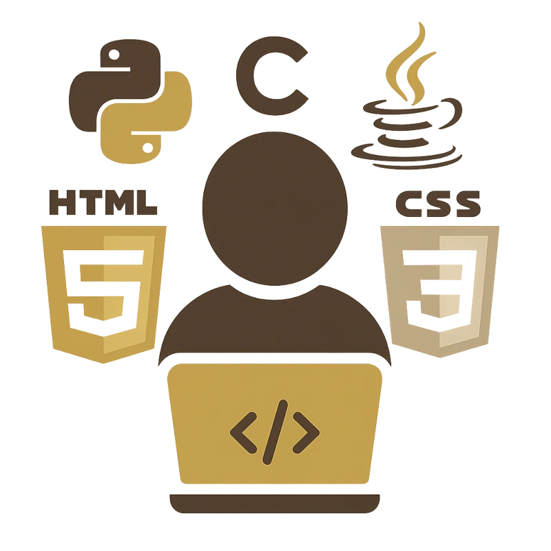
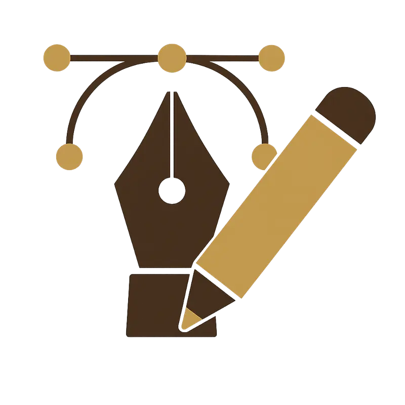

Computer Science Teacher
At Abbey College Ramsey, I led Computer Science across KS3 to KS5, delivering GCSE, A-Level, and BTEC courses while supporting CPD training. At St. Peter’s School, I taught Computing, Creative iMedia, BTEC IT, and A-Level Computer Science, also managing KS3 resources and serving as a form tutor. At The College of West Anglia, I lectured in Computer Science and Maths, coordinated Access to HE courses, and taught BTEC Computing and Gaming. In Portugal, I taught IT and Computer Science across KS2–KS5, managed networks, developed websites, and worked as a .NET programmer and graphic designer.
IT & Mathematics Tutor
As a dedicated tutor, I’ve helped students achieve success in GCSE Maths, Computer Science, and Cambridge Nationals Creative iMedia, as well as Level 3 Creative iMedia and BTEC IT. I tailor my teaching to suit each learner’s pace and needs, breaking down complex topics into simple, engaging explanations. With a patient, supportive approach and a deep understanding of the curriculum, I’ve guided many students to build confidence, improve grades, and reach their academic goals across a range of qualifications. Whether working online or in person, I create a focused, encouraging learning environment.
IT Support Technician
I’ve worked as an IT Support Technician in both educational and professional environments, delivering technical support for hardware, software, and network systems. My duties included troubleshooting issues, configuring devices, and managing user accounts and school networks. I hold CompTIA A+ and ITF+ certifications and have completed Cisco network training, which strengthens my ability to manage secure, reliable systems. I support users with clear communication and resolve issues efficiently to maintain smooth IT operations.

Software/Website Developer
I’m currently completing a Level 5 Diploma in Website Development, building skills in responsive design, accessibility, and full-stack development. My programming background includes experience where I developed applications using C#.NET, ADO.NET, Crystal Reports, and SQL Server. I have experience creating structured, user-focused websites and coding in languages like HTML, CSS, PHP and JavaScript. With a strong foundation in software development and web technologies, I bring both academic knowledge and practical experience to each project.
Skills
I hold a PGCE and a BSc (Hons) in Computer Science, with a broad skill set spanning Teaching & Education, Coding and Web Development, IT Support and Networking, Graphic Design, and Project Management. I’m fluent in both Portuguese and English, and have a good verbal and written understanding of Spanish. My experience combines academic teaching with industry-relevant technical expertise, making me a well-rounded professional able to support learners and projects across diverse educational and digital domains.
Teaching & Education
As a qualified teacher with a BSc (Hons) in Computer Science and PGCE, I’ve taught a wide range of qualifications including OCR GCSE and A-Level Computer Science, BTEC Level 2 & 3 IT, Cambridge Technicals, Access to HE, and Project Management in IT. I use the PRIMM approach to develop students’ programming skills effectively. I’ve also integrated MS Teams and Class Notebook into my digital teaching practice, supporting remote and blended learning. My approach combines deep subject knowledge with modern, structured teaching methods to engage and support learners of all levels.
Coding & Web Development
I bring strong coding and web development expertise across multiple languages and technologies. I’m proficient in HTML, CSS, JavaScript, PHP, Python, Java, C, and C#.NET, and have built database-driven applications using MySQL, phpMyAdmin, SQL Server, and ADO.NET. My experience includes developing responsive, accessible websites using Bootstrap and modern web standards. I’m currently completing a Level 5 Diploma in Website Development, which enhances my full-stack skills and supports both independent development and teaching of core programming concepts and practical implementation.
Networks & IT Support
I have solid hands-on experience in IT support and network administration, backed by certifications in CompTIA ITF+ and A+, as well as Cisco CCNA Exploration. I’ve worked with a range of Microsoft operating systems, including configuring and maintaining Windows Server environments, Active Directory, and user account management. My support experience spans troubleshooting hardware and software issues, managing secure school networks, and providing responsive, user-focused technical assistance. These skills support both educational and enterprise-level IT needs with efficiency and reliability.

Graphic Design
I hold a Level 5 Diploma in Graphic Design and have hands-on experience using tools like Photoshop, Illustrator, GIMP, and Inkscape. My skills span digital illustration, photo editing, and layout design, supported by a strong understanding of design principles and digital photography. I’ve created a wide range of visual content for educational and professional projects, from UI elements to instructional graphics. My creative approach enhances learning resources, websites, and branding with visually compelling, purposeful designs tailored to specific audiences.
Project Management
I’ve taught Project Management as part of BTEC and Access to HE Computer Science courses in further education, guiding learners in planning, executing, and reviewing IT projects. Throughout my teaching career, I’ve applied project management principles to curriculum development, resource planning, and digital initiatives. I have practical experience using Gantt charts, GitHub, and Trello to manage timelines, version control, and team collaboration—ensuring efficient project delivery in both educational and technical settings.
Languages
I am fully bilingual in English and Portuguese, with excellent written and verbal communication skills in both languages. I also have a strong understanding of Spanish, confidently reading and engaging in spoken communication. Additionally, I possess basic reading, writing, and speaking abilities in French. My multilingual skills enhance my ability to support diverse learners and communicate effectively across different cultural and educational contexts, both in the classroom and within international professional environments.